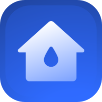
Home automation · Product · UI/UX
H2O Connect
A retrofit kit and app for rooftop water tanks, now in about 100 homes. It shows what the pump is about to do, proves what it just did, and hands control back in one tap.
Deliverables
- Desk research
- Product ecosystem
- Design system
- Mobile app
- Working prototype
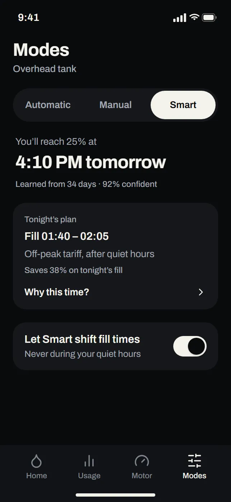
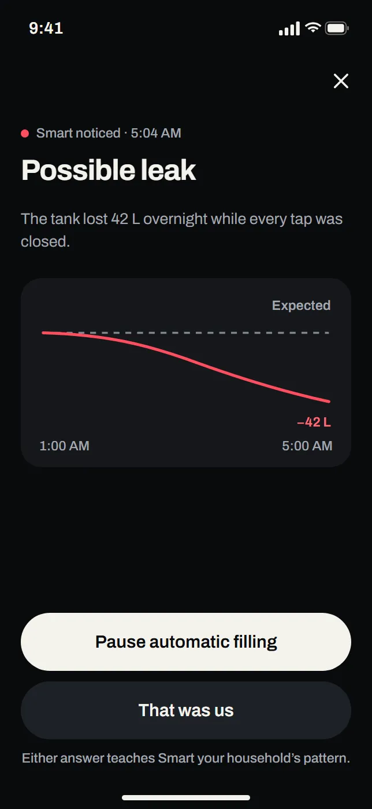
See it in motion
Seventy seconds of the app in use: the tank, the fill range, Stop, the alerts, the three modes, usage, the leak alert and the two failure states.
Animated walkthrough of the H2o Connect app on a phone. The app opens on Home and the tank fills to 78%, 1,560 of 2,000 litres, with a live reading. A tap on the tank opens the fill range, where both levels are dragged to 90% and 25%, shown in litres too. On the Motor tab, one tap on Stop stops the motor with no confirmation and the app says it stays in Manual. A low water notification opens the alert, which offers to start the motor and to switch to Automatic. In Modes, a tap on Smart shows its prediction, learned from 34 days, and tonight’s off-peak plan. Usage shows the week’s water and electricity and every motor run with its cost and what started it. A possible leak notification opens the alert: the chart of expected and actual levels comes first, then 42 litres lost overnight, then two choices, and pausing automatic filling shows a toast with Resume. Home then shows Sensor not reporting and No internet, and all ten screens turn together in an arc before the end card.
Overhead tank
Home · 2 tanks
78%
1,560 of 2,000 L
Full in 12 min
Motor running
Automatic · 04:12
This week
1,240 L used
Fill range
Overhead tank
90% · 1,800 L
25% · 500 L
The motor will run about 18 minutes each time, roughly twice a day.
Save rangeMotor
Overhead tank
Running · Automatic
04:12
of about 18 min
Stop motor22 L/min
0.75 kW
3
Dry-run protection
Cuts power if the sump runs empty
Modes
Overhead tank
Keeps the tank between your two levels.
- Below 25%
- the motor starts
- At 90%
- the motor stops
- Sensor quiet
- you get an alert
Eco mode
Off-peak only · 4.2 units saved
Boost
Fills at the maximum rate
Quiet hours
No motor from 9 PM to 1 AM
Water is low
The overhead tank is at 22%. The motor is off.
Usage
This week
1,240 L
and 8.4 units of electricity
Recent runs
Today, 6:42 AM
18 min · 720 L · ₹1.80
Started at 25%
Yesterday, 7:10 PM
12 min · 480 L · ₹1.20
Started from the unit
Monday, 6:38 AM
21 min · 840 L · ₹2.10
Started at 25%
Modes
Overhead tank
You’ll reach 25% at
4:10 PM tomorrow
Fill 01:40 – 02:05
Off-peak tariff, after quiet hours
Why this time?
Let Smart shift fill times
Never during your quiet hours
Possible leak
The tank lost 42 L overnight while every tap was closed.
Overhead tank
Home · 2 tanks
78%
1,560 of 2,000 L
Sensor not reporting
No reading since 7:40 AM, so Automatic won’t start the motor. The unit’s dry-run and thermal cut-offs still protect it.
Offline · last update 9:12 AM
Overhead tank
Home · 2 tanks
78%
1,560 of 2,000 L
No internet
Automatic and the safety cut-offs run on the unit. On home Wi‑Fi you can still stop the motor.
Motor running
Automatic · 04:12
H2O CONNECTnow
Water is low
Overhead tank at 22%. The motor is off.
H2O CONNECTnow
Possible leak
42 L lost overnight while every tap was closed.
Automatic filling pausedResume
Jumps past the decisions to the ten screens
Water comes for two hours a day. Nobody can see the tank.
Homes store it in a rooftop tank and pump it up by hand, with no gauge and no warning.
A typical day. The times are an example; the two-hour window is what most town homes get.
2hrs
of piped water on a normal day in most town homes.
World Bank
<6hrs
of supply a day in many Indian cities.
MIT Tata Center
73.9%
of rural homes now have a tap, so the problem has moved indoors.
Jal Jeevan Mission, 2024
Every overflow is water the household already paid to pump.
People check the tank because nothing tells them what it’s doing.
I worked from desk research, then the kit went into about 100 homes with Dwaj‑Tech.
What people are really trying to do
When the water comes, they want the tank filled without overflowing or running the pump dry, so they can stop checking.
Pushes away from the switch
“Every overflow is water we already paid to pump.”
Answered by: the motor stops at 90% on its own.
Pulls toward H2o
“I want to know without climbing up there.”
Answered by: the level, live, on Home.
Anxiety
“What if it fails while nobody’s watching?”
Answered by: cut-offs on the device and two failure screens.
Habit
“I know the sound it makes when it’s nearly full.”
Answered by: the wall switch always wins.
These are assumptions from desk research, not interviews. People switch when the push and the pull beat the anxiety and the habit.
How it works
A kit that fits the tank, pump and switch a home already has, and an app that tells you what it’s doing.
Sense
A sonar sensor on the lid reads the level. It never touches the water.
Decide
The unit by the switch starts the motor at 25% and stops it at 90%, off-peak when it can.
Protect
If the sump runs dry or the motor overheats, it cuts power in under 200 ms, with or without internet.
Show
The app shows the level live, keeps a receipt for every run, and stops the motor in one tap.
What it saves
Water that used to run over the top, and power that used to run at the wrong hour.
Water
Never past 90%
The motor stops at 1,800 of 2,000 litres, so the tank doesn't overflow.
- 42 Llost overnight, flagged by the leak alert the next morning (the app's example)
- 500 Lis where a refill starts, so the tank never sits empty waiting for someone
Power
20 to 40% lower bills
Estimated for large facilities, from filling only as needed and at off-peak hours.
- 38%cheaper for tonight's fill, moved to the off-peak tariff (the app's example)
- <200 msto cut the motor on a dry run, before it burns out
None of this is measured in the homes yet. The study will report real litres and units saved.
Designing for fewer app opens
Most apps want a daily open. This one works when the person who runs the pump stops climbing up to the roof.
Before
A remote for the motor
The controllers on sale could start and stop a pump. None could say what the tank would do next, or prove what it had done.
Decision
A witness that can act.
State and proof come first, controls second. It costs screen space a plain remote wouldn’t need.
The three options I weighed. Only one shows the tank and proves what it did.
Four rules hold every screen to that.
State before controls
No home screen that opens on a power button.
Every action leaves a receipt
No silent schedules.
Colour means something
No colour used to fill space.
The wall switch always wins
No flow that traps a household in the app.
After: the tank first, the controls second.
Home
Opens on the tank, with how fresh the reading is.
Usage
Every run has a cost and a cause.
Smart mode
Smart says what it plans tonight, and how sure it is.
Result
In about 100 homes
My target is fewer than three app opens a week by week six, which would mean people stopped checking. Not measured yet.
Stop gets one tap and no dialog
People reach for Stop when something already looks wrong, so every second counts.
Before
Below the fold, behind a dialog
On small phones Stop needed a scroll, and it asked for confirmation like any destructive action.
Decision
One tap, no dialog. The wall switch always wins.
A stray tap can stop the motor. Restarting is one tap, and the app says why it stopped.
With a confirmation
3 actions
In H2o
1 action
What stands between “that looks wrong” and a stopped motor.
After: Stop is one tap on every surface.
- PhoneIn the motor panel
- Dynamic IslandTwo taps from any app
- WatchWhere the thumb lands
- Kitchen display“Alexa, stop the pump”
- The unitA button and a Manual switch
Taking it back
Any mode · One tap · under 200 ms
- TriggerAny screen, any mode
- One tap on Stop, no dialog
- Relay responds in under 200 ms
- “Manual until you switch back”
- OutcomeAutomatic resumes only when asked
Result
Target: stopped in under 3 seconds
Measured as the median in a planned study. The unit’s button and Manual switch work with the phone or router down.
Why no undo
Restarting a pump isn’t a neutral undo, and an undo bar would cover the reading.
The leak alert shows its evidence first
An alert that asks before it explains gets dismissed, or believed for no reason.
Before
The question came first
My first version led with two buttons and put the evidence underneath.
Decision
If Smart can’t explain why, it asks.
The chart comes before the choices, so it takes one glance longer. A wrong shut-off at 5 AM costs far more.
After: what Smart saw, then two choices.
Something the system can’t explain
Smart · One decision
- Trigger42 L lost overnight, taps closed
- Compared with 34 days of history
- One notification at 5:04 AM
- EvidenceWhat Smart saw
- DecisionTwo choicesPause automatic fillingThat was us
- OutcomeLogged, and the pattern updates
Only what the kit can do
The main choice pauses automatic filling, with Resume. The inlet valve is still planned, so “Close the valve” waits for it.
Result
Not measured yet
Every answer is logged, so a study can count how often households agree with Smart.
Readings in litres and minutes
Nobody fills a bucket in percent.
Before
One big percentage
Every reading needed a sum: how many buckets is that, and how long until it’s full?
Decision
Percent, litres and minutes, read as one answer.
Three numbers where there was one, so they sit together in one block.
One reading three ways, with the two levels the motor works between.
After: litres and minutes everywhere, down to the receipt for each fill.
The daily fill, with nobody watching
Automatic · Zero taps
- TriggerLevel drops below 25%
- Checks quiet hours and tariff
- Motor starts, confirmed by current
- Home shows level and time to full
- Stops at 90%
- OutcomeReceipt: 440 L · 22 min · ₹2.10
Fill range
Each level labelled in percent and litres, beside its handle.
Modes
Automatic says exactly when the motor starts and stops.
Result
Nothing left to convert
Every percentage sits beside litres and every wait is in minutes. Not measured in a study yet.
How the screens took shape
Each version kept something from the one before.
-
Design
Hierarchy in grey
Six wireframes before any colour. The tank leads every screen.
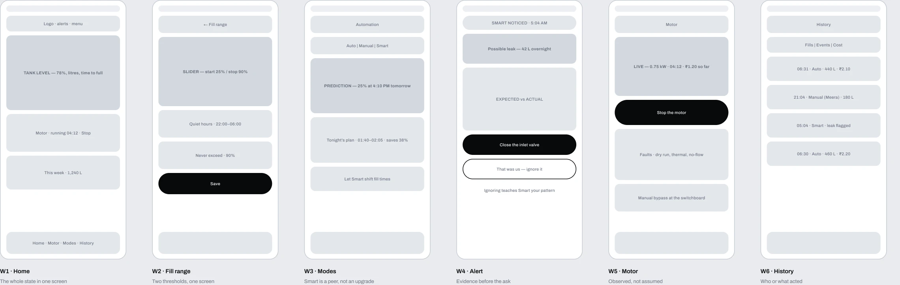
-
Design
Three directions, one idea from each
None worked whole. I kept the colour discipline, the card structure and the plain labels.
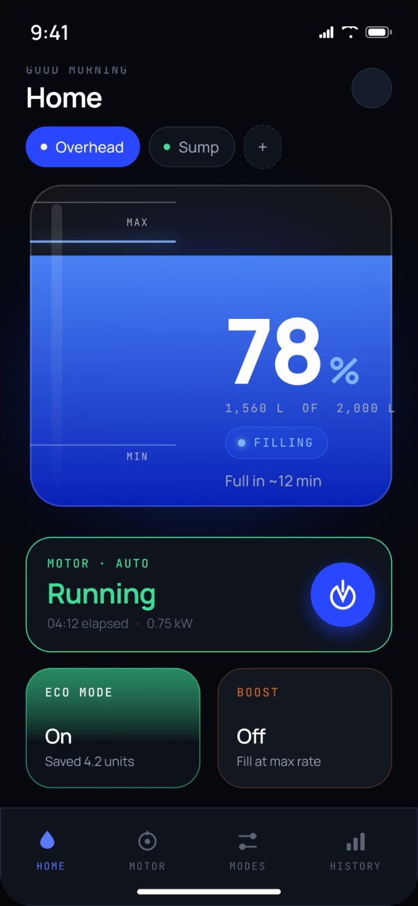
Ambient: colour discipline 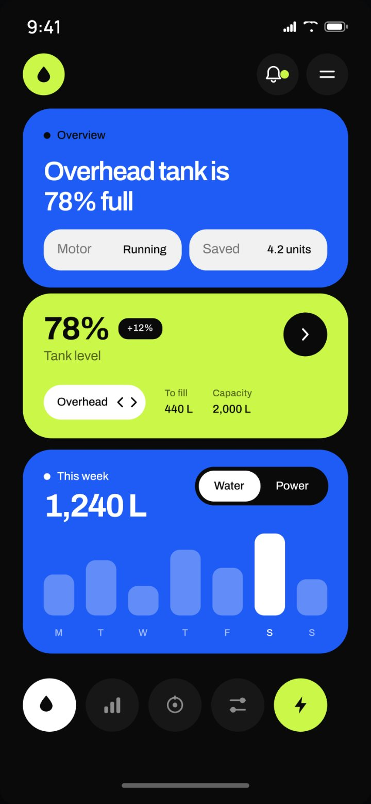
Bento: card structure 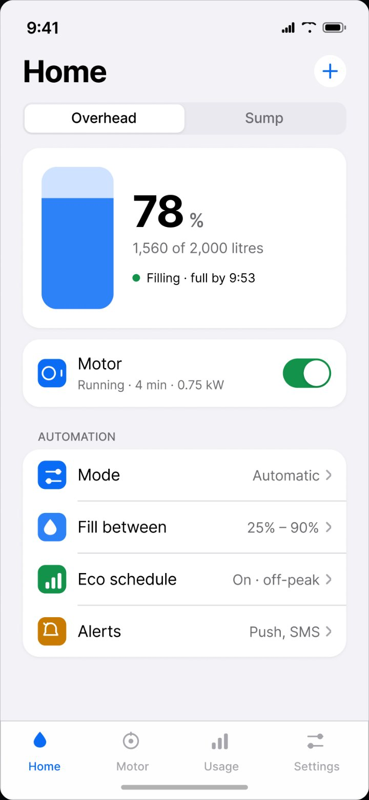
Native: plain labels -
Install
The first app
What went into about 100 homes. Icon-only tabs and a bare square for Stop.
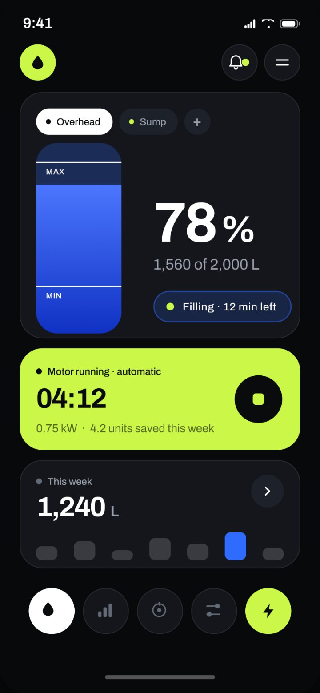
-
Review
A first fix that kept the look
Twelve fixes from my review. Labels arrived, but every screen still had three things shouting.
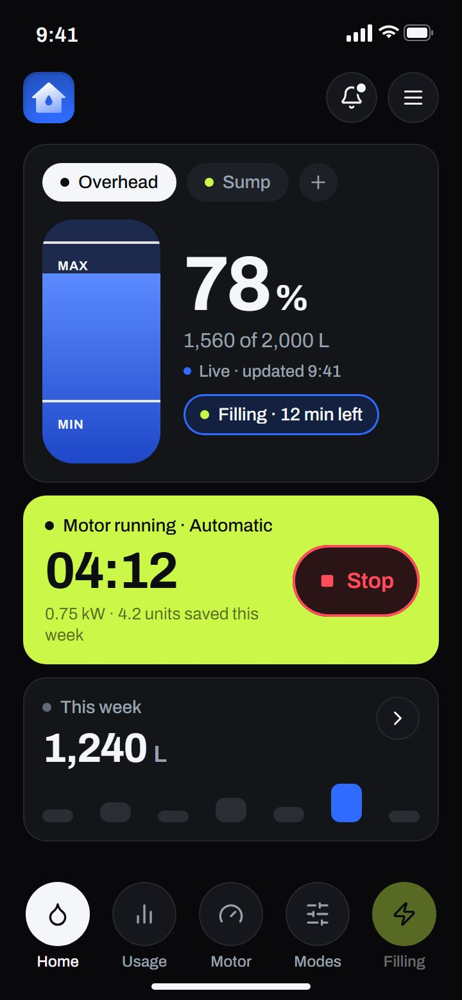
-
Review
One system, in dark and light
Two surfaces, five type sizes, and lime only while the motor runs.
Dark 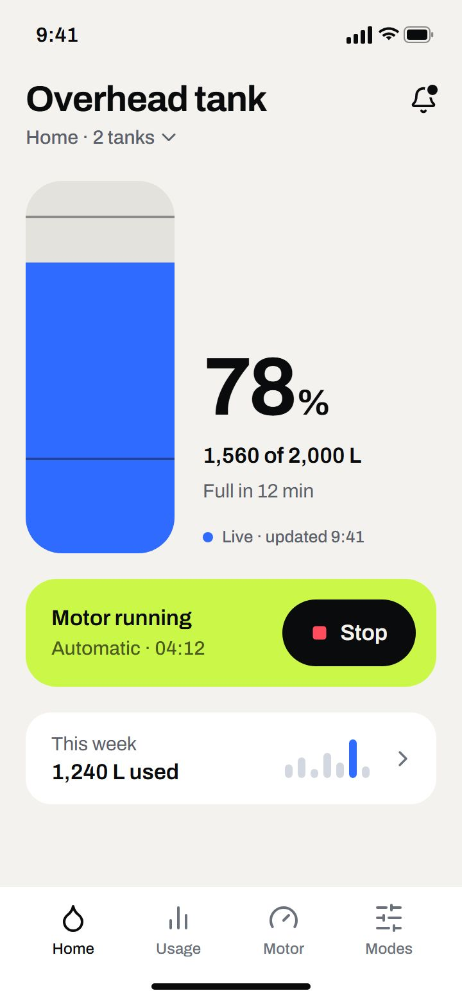
Light
34 problems in my own app, and a redesign
After the installs I went back through every screen against Nielsen’s heuristics and the Laws of UX. My first fix didn’t go far enough.
Before
Polished, with quiet contradictions
Quiet hours banned night fills while Smart planned one at 1:40 AM. Tabs had no labels, and Stop was a bare square.
Decision
One lead per screen, and colour that means one thing.
The lime card every screen leaned on now shows only while the motor runs. People who knew the old app will need a moment.
4 major
17 moderate
13 minor
- 34issues found in the review
- 12fixed in a first pass that kept the old look
- 11screens redesigned on one system
After: four tabs, one level deep. Settings sit behind the tank menu.
-
HomeTab 1
- Level, litres, time to full
- Motor panel with Stop
- This week
- Active alert
-
UsageTab 2
- Every fill and its cost
- Event log
- Leak records
- Export
-
MotorTab 3
- Start and stop
- Power, run time, cost
- Faults
- Bypass at the switch
-
ModesTab 4
- Automatic
- Manual
- Smart
- Back to Manual
-
SettingsTank menu
- Tanks and sensors
- Members
- Matter link
- Text size, language
Scroll sideways to see the whole map.
Two states the app never had: a silent sensor and no internet.
Sensor not reporting
Automatic holds off until the sensor is back. The unit’s cut-offs still protect the motor.
No internet
The unit keeps running on its own, and Stop still works on home Wi‑Fi.
Result
Eleven screens on one system
The failure screens answer the fear behind the product: automatic things break when nobody’s watching. Not tested with households yet.
How I built it with AI
I made the calls; Claude Code wrote and rendered the code. Change a screen once and everything below follows.
- Screenshots11 screens
- Light mode4 previews
- Hero covers3 phones
- Component sheetDesign system
- Walkthrough filmLive screens
I decided
- The principles, and every decision on the journey
- Which review findings to fix, and what to keep
- When a version wasn’t good enough, my own included
The AI did
- Wrote the screens in HTML and CSS
- Audited them against heuristics and anti-slop rules
- Rendered every image and built the film
What went wrong
Mistakes I caught late, compromises I kept, and what isn’t finished.
- Changed
I designed for a valve the kit doesn’t have
The first leak alert offered to close it. It now pauses automatic filling instead.
- Redesigned
My first fix didn’t fix the feel
Twelve fixes later the screens still looked busy, so I rebuilt the system (decision 5).
- Kept
Some numbers don’t add up
Flow, run times and energy come from different stages. I kept them rather than invent new ones.
- Not measured
No study yet
Every result here is a target, set before the study.
- Not built
English and iPhone only
The homes are in Andhra Pradesh and Telangana, where most phones run Android and many people read Telugu.
The kit it runs on
A sonar sensor on the lid and a unit beside the motor switch, built with Dwaj‑Tech. It works with the tank, pump and switch a home already has.
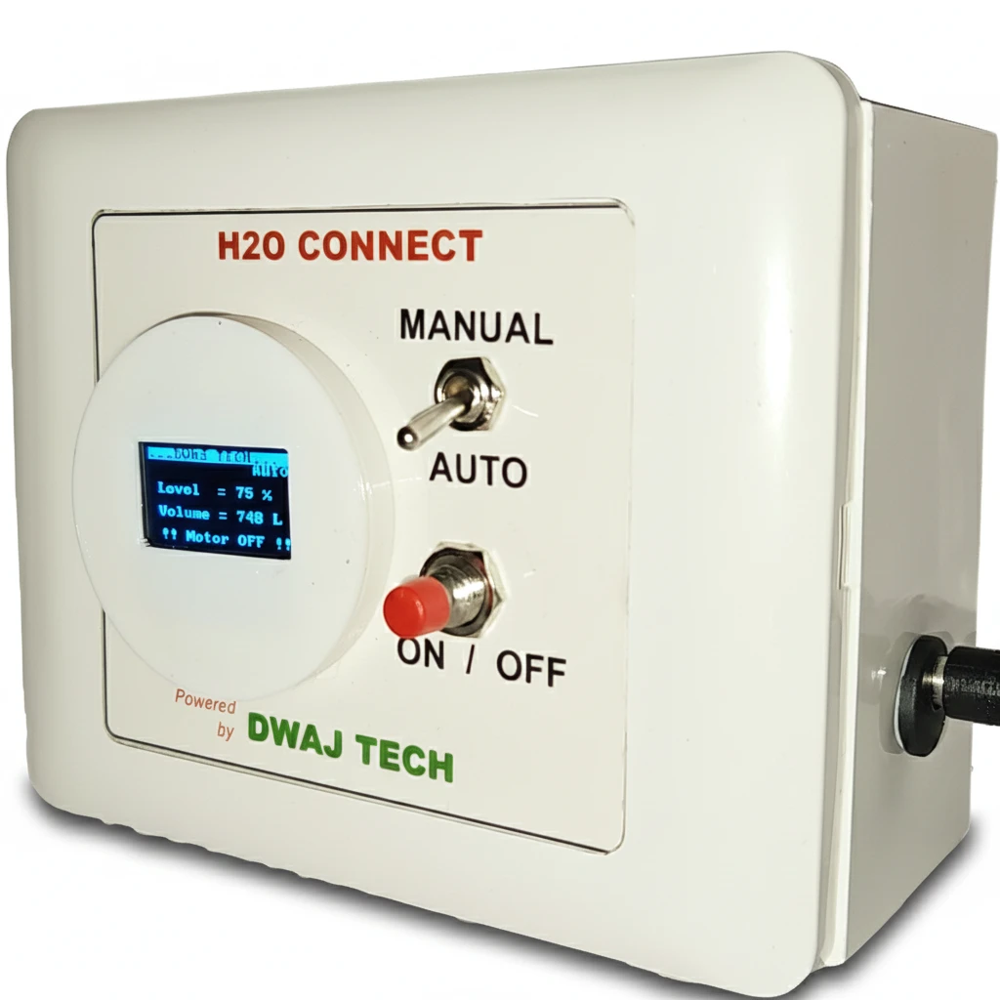
1 2 3 4The working prototype
- DisplayLevel, volume and motor state, without a phone.
- Manual and Auto switchManual always wins, in hardware.
- ON and OFF buttonWorks with the phone or router down.
- WiringEnters beside the existing switch.
0corrosion
Sonar reads the air gap. Nothing touches the water.
20 to 40%
lower energy bills, estimated for large facilities.
On the device
<200ms
Cut-offs for dry run, overflow and heat. No internet needed.
On the phone
<1s
Mode, levels, start and stop, over home Wi‑Fi.
In the cloud
30+days
History and the pattern Smart learns. Slow is fine.
Tank sensor
Sonar under the lid, magnetic mount.
In use
Display unit
Switches the motor, confirms it by current.
In use
Sump sensor
A dry run guard on the sump.
Planned
Inlet valve
Lets Smart close the inlet on a leak.
Planned
20min
to install
1step
needs an electrician
0
drilling or rewiring
Joins the home over Matter
- Apple Home
- Alexa
- Google Home
- SmartThings
The eleven screens
Each one says what’s happening before it offers an action, including when the sensor or the internet drops.
Home
The tank leads. The lime panel appears only while the motor runs, with Stop inside it.
Fill range
Both levels dragged on the tank, each labelled in percent and litres.
Motor
“Running” is confirmed by current draw. Stop never asks twice.
Modes
Three equal modes, one tap apart. Quiet hours never clash with Smart.
Low water alert
Manual mode warns, but never acts.
Usage
Every run shows what it cost and what started it.
Smart mode
Every prediction shows its confidence.
Smart insight
Evidence first, then only what the installed kit can do.
Sensor not reporting
Automatic holds off until the sensor is back. The unit’s cut-offs still protect the motor.
No internet
The unit keeps running on its own, and Stop still works on home Wi‑Fi.
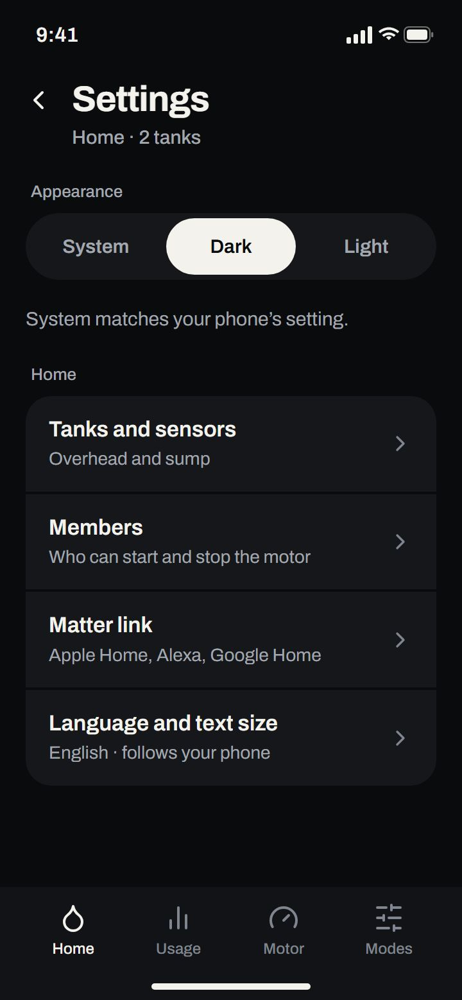
Settings
Appearance follows the phone, or stays dark or light.
The tank leaves the app with you
A Live Activity keeps the level and the countdown beside the camera, with the motor one tap away.
Level and time left
A ring fills with the tank on one side of the camera and the countdown runs on the other. It turns orange when the tank runs low.
Stop, start, switch mode
Auto, Manual and Smart sit beside the motor button. Each change confirms in the line under the timer, so the island never jumps away.
Alerts grow out of the island
Water is low
Start motor, or Later
Tank full
Stopped at 90%, 1,800 L
Possible leak
Close inlet, or That was us
2taps
to stop the motor: the island, then Stop.
Rules it keeps
- Only outside the app, as on iOS
- Auto on a low tank starts the motor
- Stop never asks twice
On an iPhone this is a Live Activity whose buttons run App Intents (iOS 17 and later). There a tap opens the app and a long press expands the island; the prototype expands on a tap so it works in a browser.
Every screen in the home can stop the pump
The same rules on the wrist, the speaker and the kitchen display.
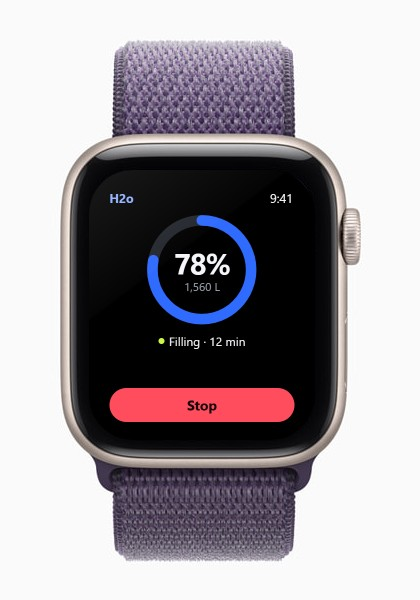
Apple Watch · glance
Level and time to full. Stop where the thumb lands.
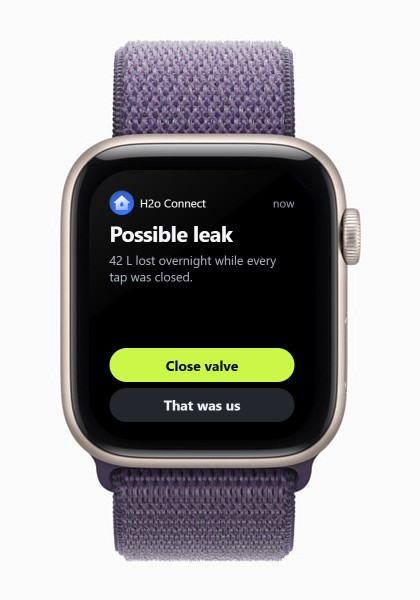
Apple Watch · alert
The evidence in one line, then the two choices.
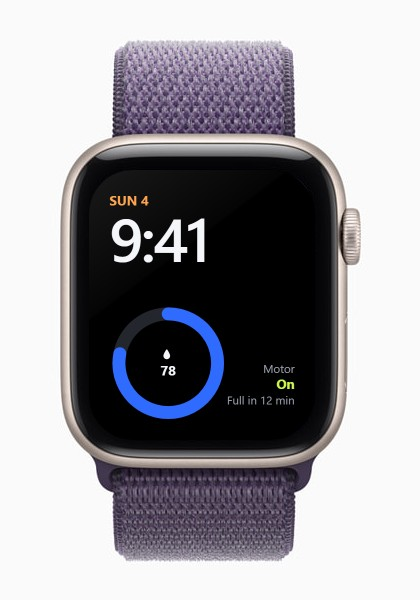
Apple Watch · complication
The level stays on the watch face all day.
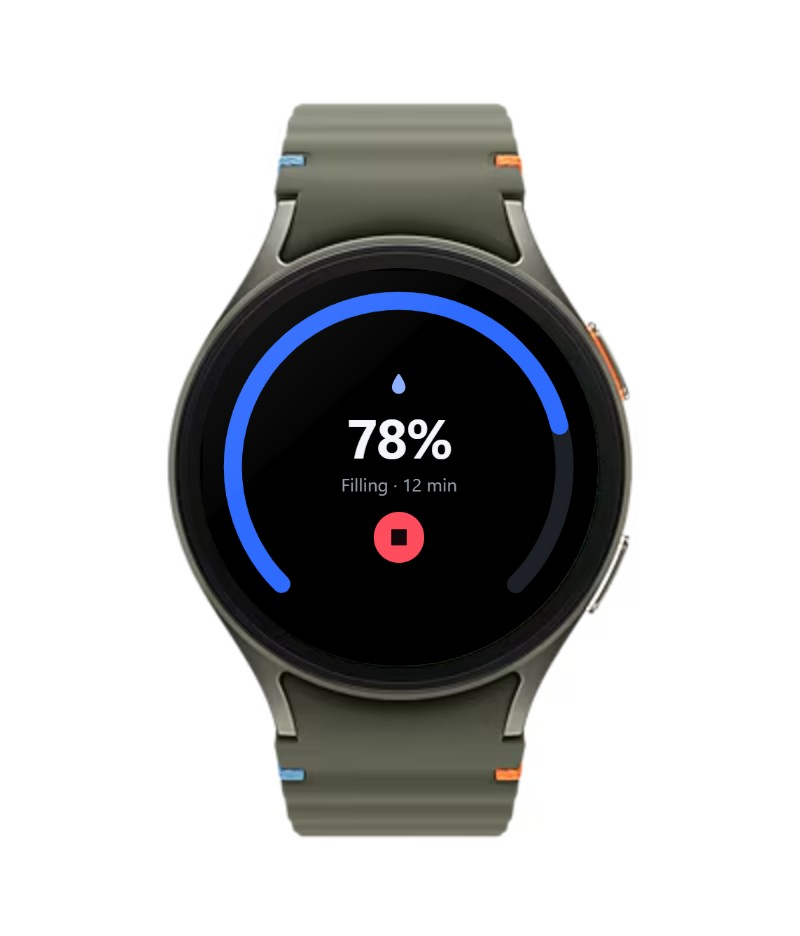
Galaxy Watch · status
An arc gauge suited to the round display.
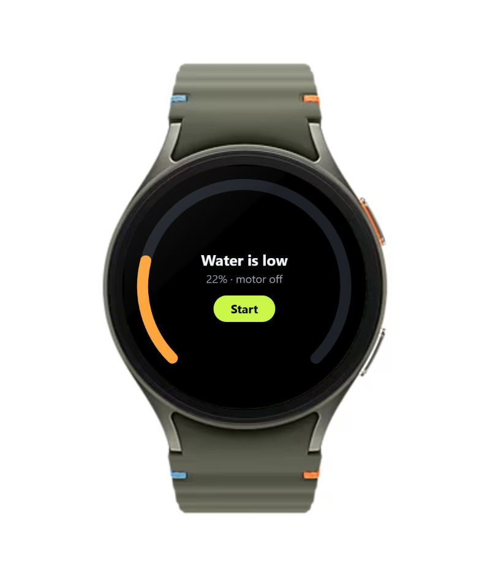
Galaxy Watch · low water
The same words as the phone, one Start button.
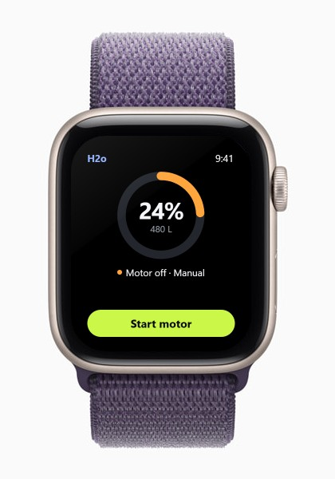
Apple Watch · start
Low tank, motor off: Start is the only action.
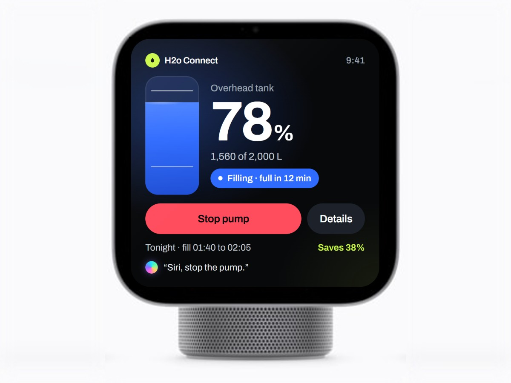
Apple HomeView · Siri
Reads from across the kitchen. “Siri, stop the pump.”
Device: Apple HomeView, Apple Newsroom image. Screen: H2o Connect.
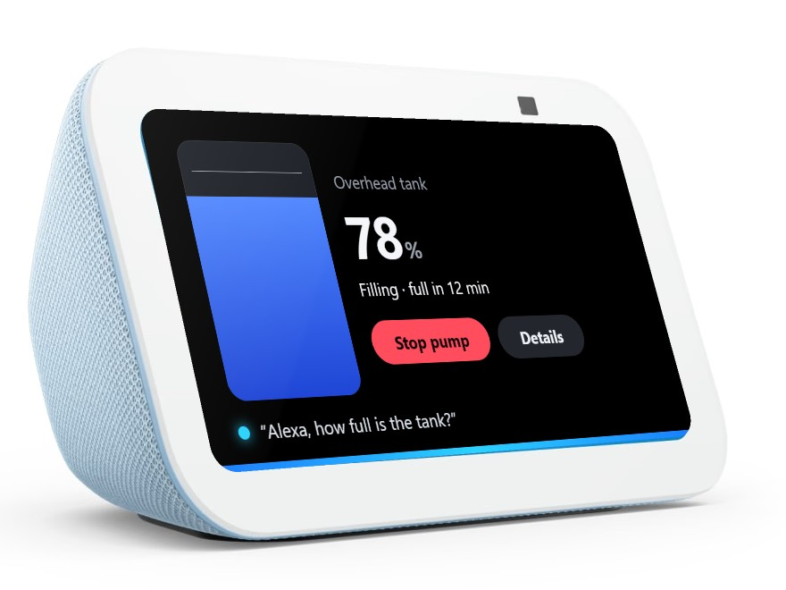
Echo Show · Alexa
“Alexa, how full is the tank?”
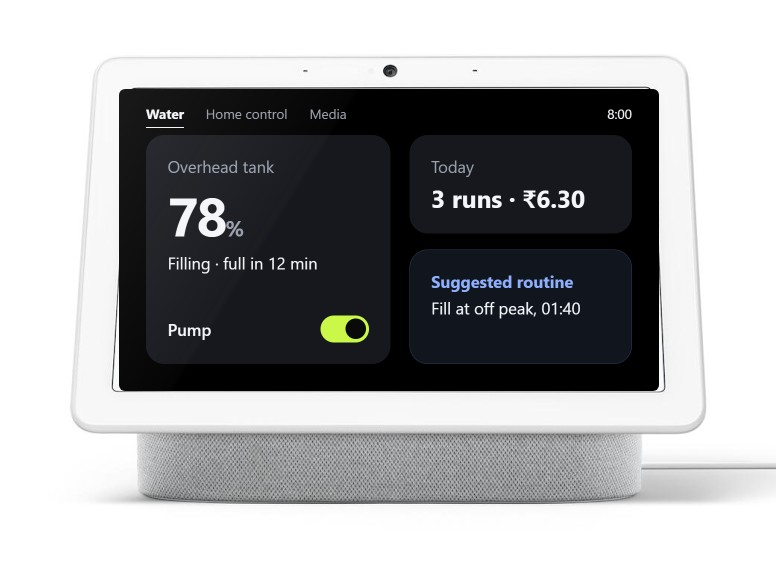
Nest Hub · Google Home
Status on the counter, with an off peak routine.
Anyone at home can check the level and stop the pump from any surface. Safety settings only change in the app.
Colour that means something
Two surfaces and no outlines, one typeface in five sizes, and colour roles that each mean one thing, measured against the app background.
Lime · the running motor
- HEX
- #CBF848
- RGB
- 203, 248, 72
- Contrast
- 16.0 : 1 · AAA
Water
- HEX
- #2F6BFF
- RGB
- 47, 107, 255
- Contrast
- 4.4 : 1 · Large only
Chalk · text and actions
- HEX
- #F4F2EC
- RGB
- 244, 242, 236
- Contrast
- 17.6 : 1 · AAA
Alert · low or stale
- HEX
- #FFA53D
- RGB
- 255, 165, 61
- Contrast
- 10.0 : 1 · AAA
Alert · critical
- HEX
- #FF4D5E
- RGB
- 255, 77, 94
- Contrast
- 6.1 : 1 · AA
Text · secondary
- HEX
- #A3A8B0
- RGB
- 163, 168, 176
- Contrast
- 8.2 : 1 · AAA
Text · inactive
- HEX
- #80868F
- RGB
- 128, 134, 143
- Contrast
- 5.4 : 1 · AA
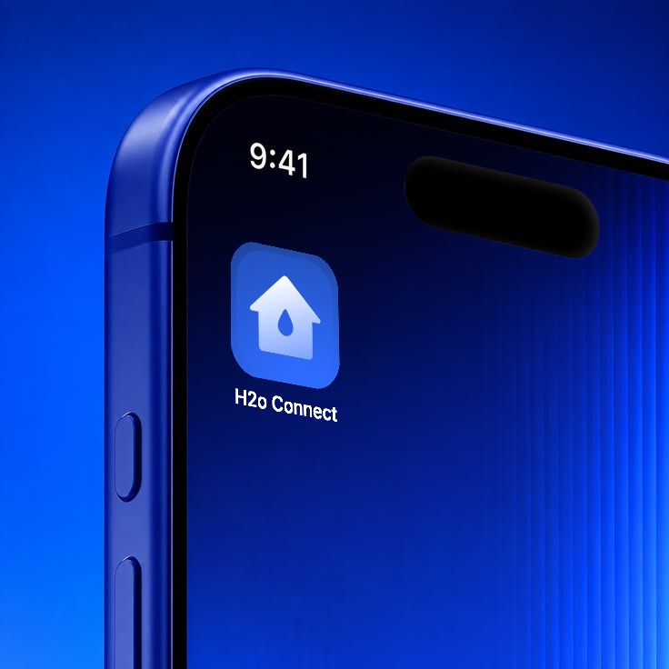
On the home screen
Archivo, in five sizes
- Number64 / 61 · Bold
- 78%
- Title28 / 31 · Bold
- Possible leak
- Lead17 / 22 · SemiBold
- Tonight’s plan
- Body15 / 22 · Regular
- 1,560 of 2,000 L
- Meta13 / 17 · Medium
- Live · updated 9:41
App icon
Rules
- Two surfaces, no outlines
- Lime only while the motor runs
- 48 px targets, 56 px for Stop
- 24 px panel radius
- No colour only states
- No confirm on Stop
Components, built in code with the screens
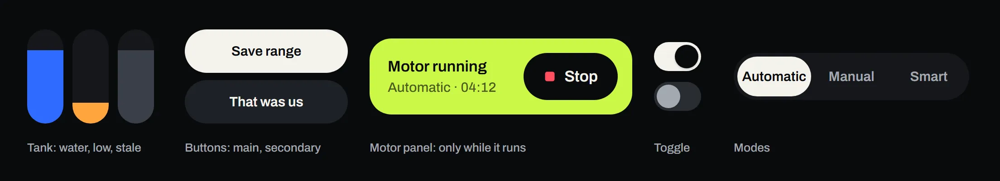
Dark and light
Picked in Settings › Appearance, or left to follow the phone. Lime, water blue and the Stop pill look the same in both.
Home
The tank and the motor panel.
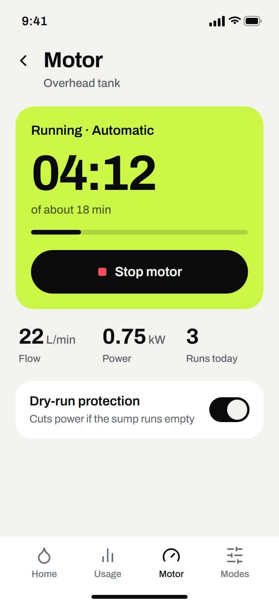
Motor
Lime reads the same on either ground.
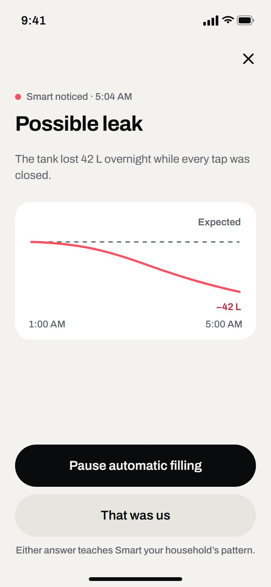
Possible leak
The chart keeps its contrast in daylight.
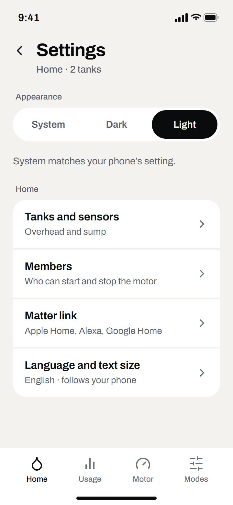
Settings
Where the choice lives.
Targets, set before the study
So they can’t be picked afterwards. The kit and app are in about 100 homes; none of this is measured yet.
Happiness
4 of 5
would leave it running unattended by week 4
Not measuredEngagement
<3 a week
app opens by week 6. Meant to fall.
Not measuredAdoption
85%
reach a first automatic fill within 24 hours
Not measuredRetention
70%
still on Automatic at day 60, after a fault
Not measuredTask success
<3 s
median time to stop the motor
Not measured48px
smallest touch target
56px
for Stop, never confirmed
200%
text size without breaking
0
states shown by colour alone
The planned study: 8 households, 6 tasks and a two-week diary. The 20 to 40% energy saving is an estimate.
A tank that tells you what it’s about to do.
H2o Connect · Domestic water management · A product by Dwaj‑Tech · 2026
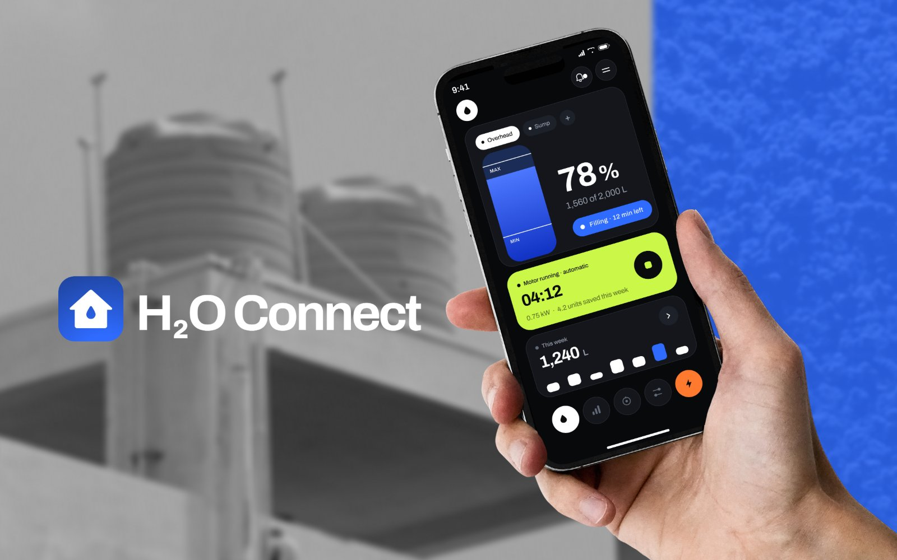